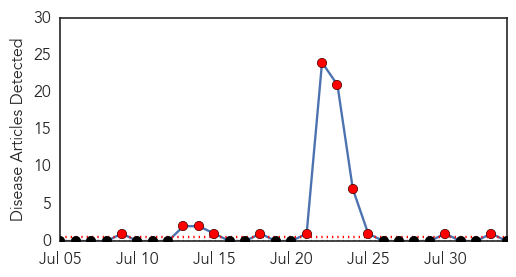
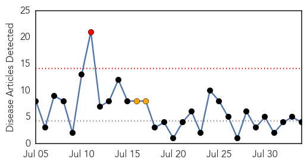
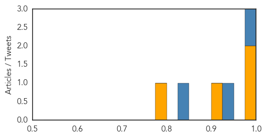

Bubonic Plague
30-Day Web Trend
12 alerts, 0 warnings

30-Day Twitter Trend
0 alerts, 0 warnings

Article Locations

Article Confidences

Top Articles:
-
No articles found for Aug 03, 2014
Top Tweets:
-
No tweets found for Aug 03, 2014
Dengue Fever
30-Day Web Trend
1 alerts, 2 warnings

30-Day Twitter Trend
4 alerts, 0 warnings

Article Locations

Article Confidences
Top Articles:
Top Tweets:
- 0.998
- RT: "Ebola mimic:malaria dengue typhoid shigellosis cholera leptospirosis plague rickettsiosis meningitis hepatiti…
- 0.938
- RT: En RD no han logrado controlar en dengue. Aun hay malaria. Y todos estamos sufriendo secuelas de chikungunya. Que ser…
- 0.832
- RT: La epidemia de censura es tanto o mas preocupante q la de dengue ,malaria y chikungunya